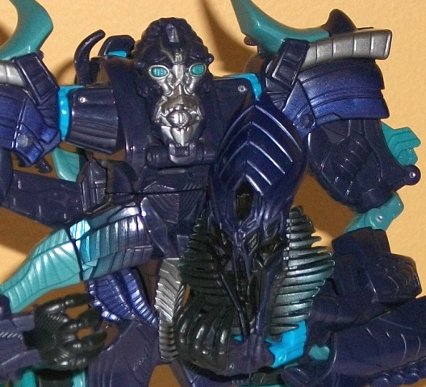
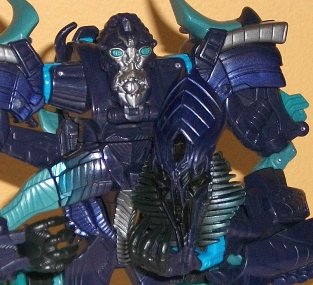

(NOTE: Because this is a repaint, this is not a full-blown review. This mainly covers any changes made to the mold and the color scheme, and merely compares it to the original voyager RotF The Fallen toy. For a review on the mold itself, read the review of the original voyager RotF Fallen toy here .)
The Fallen is a bit of
an unusual redeco to bring into the Autobot Alliance line, given that he
was pretty definitively dead at the end of
Revenge of the Fallen
.
But hey, that hasn't stopped Transformers before, right? Anyways, instead
of just a slight redeco, this version of The Fallen has exchanged his flamey
& green deco for a rather "icy" color scheme. A really nice shade of
dark bluish purple is the main color, and the pale greenish blue contrasts
with it well while still giving him that "cold" look. The couple of accents
that are present also contrast very well with the surrounding colors and
highlight certain areas of hte figure while keeping that icy theme going--
the light sky blue looks especially good, and the silver paint apps make
sure he isn't made ENTIRELY of different shades of blue. That said, a few
more paint apps to break up some of the colors a little more-- particularly
on his arms and feet-- would've been appreciated.
There are two major
mold changes made to this version of The Fallen. The first is that he now
comes with his staff that he had in the movie, and it has some pretty nice
mold detailing. His hands have been remolded so that he can hold the staff,
but in actuality he only loosely grasps the thing-- it doesn't take too
much wiggling and the staff falls out. The staff can bend in half and be
stuck in a small hole in his vehicle mode for "storage", but it sticks
out like a sore thumb in that mode, which is saying something considering
how poor The Fallen's vehicle mode already is. The second mold change,
on the other hand, is something I have nothing negative to say about, and
that's his new head mold(s). His "main" head now looks INCREDIBLY accurate
to its screen appearance in everything but color-- really, the amount of
molded detail on this thing is nearly unmatched among Transformers toys,
and is simply wonderful to look at. However, you can also take The Fallen's
face off to reveal a detailed (both in terms of mold and paint detailing)
"damaged face" underneath, just like when Optimus Prime famously said that
"Give me your face!" line near the end of the movie! This is one of those
completely unnecessary but really fun added details that I just love.
Autobot Alliance The
Fallen's color scheme is a near-opposite of his onscreen appearance's,
but if fits, especially if he's been "de-powered" since the events of the
second TF movie. It's a pretty good "icy" color scheme in and of itself,
too, though a few more paint details could've been put here and there.
What really makes this redeco stand out, though, are the much-needed added
weapon and the fun face-removal gimmick (along with the incredible face
sculpt itself). He's still a fairly bad toy in "vehicle" mode, but the
mold changes push this version above his initial Voyager class version
(but not QUITE as high as the
"Burning" version
).
Review by Beastbot